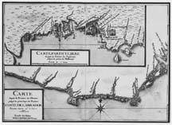
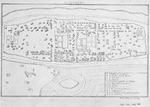
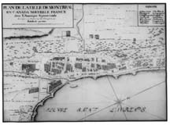
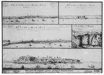
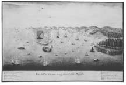
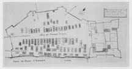

A virtual exhibit based on selections from Buisseret, David. Mapping the French Empire in North America: An Interpretive Guide to the Exhibition Mounted at the Newberry Library on the Occasion of the 17th Annual Conference of the French Colonial Historical Society (Chicago: The Newberry Library, 1991).
Even before the expeditions of Jacques Cartier, there had been fishermen from the French Atlantic and Channel ports working the Grand Banks off Newfoundland; it was therefore natural that the French should have entered the New World through the estuary of the Saint Lawrence River. In this section we attempt to give some idea of what their settlements looked like, both in the Saint Lawrence valley and also in the wilds of Labrador. But this region also had substantial towns, earlier than in the other regions of French settlement, and we have consequently shown a number of plans of towns and forts. Eventually, the great bulk of the population, such as it was, came to be concentrated in the Saint Lawrence valley. But the French had to man strategic outposts like Louisbourg, because if they lost control of the approaches to the Saint Lawrence valley, their settlements in the valley could not long survive.
These maps come from the collection of over one hundred manuscript maps known as the "Cartes Marines," which show the French overseas possessions at the beginning of the eighteenth century. They seem to have been collected early in the eighteenth century by some person living at Solothurn, in Switzerland. This person seems to have had access to some French official material, and may have been a Huguenot who had taken refuge across the border. The maps sometimes duplicate, sometimes complete and are sometimes quite distinct from similar material preserved in the great French national archives and libraries.The page shown here was the work of N. de Beauvilliers, an ingénieur du roi active in the first three decades of the eighteenth century; we know nothing about his life, except that he worked in Canada and also in the West Indies (among the cartes marines are his maps of Nevis and Ile-à-Vache). His style is characteristic of French military maps of the period, and he was doubtless trained in France. The maps show two stretches of the coastline along the coast of Labrador facing onto the St. Lawrence Gulf, from Natashquan to Bradore. The upper map is a detail of the base established at Bradore in 1703 by Augustin Legardeur, sieur de Courtemanche. French houses, like those of "M. de Courtemanche," are shown in groups, with palisades and fences round their gardens; intermingled among them are the tipis of the Montaignais employed by Courtemanche as trappers and fishermen. The settlement thrived on its fishing industry, though there were frequent disputes with the Inuits to the north.
References: Cole Harris, Gosling, Smith and Trudel.
This elegant little drawing is from the Margry Collection of maps, and shows Montréal about 1710. It is drawn in a rather naïve style, as a sort of bird's-eye view; we have to take it on trust that the copyist has faithfully reproduced the original in the Archives Nationales in Paris.Montréal had been founded in 1642, but early in the eighteenth century was still a very small town, with about 150 houses and fewer than 1,500 inhabitants. Using the key, we can pick out the main buildings. From "A" to "H" they are all structures related to the church, perhaps a reflection of the intensely religious nature of Montréal's foundation, as a center for evangelization among the surrounding Indians."A" marks the hospital, outside the walls in case of contagion, as was often the case in Europe at this time. "B" (top left) is the site of the new monastery of the Recollects, and "H" that of the Jesuits, at the other end of town, "C" is the large seminary, and "D" the parish church of Notre Dame, built between 1672 and 1683. "E" is the huge hospital, largely staffed by the Soeurs de la Congrégation, whose house lay just across the green at "F." Close by was the relatively small prison at "G."Five private houses are also marked, and we can track down most of their owners. At "I," for instance (far right), is the house of "M. Rameses," surely Claude de Ramezay, a famous figure in the history of the settlement whose house was built in 1705 and still stands today. These are the larger houses among many smaller ones, scattered apparently without much order within the protecting walls.
References: Cole Harris, Rumilly, and Smith.
This plan, of which a very similar example survives at the Archives Nationales in Paris, was the work of Gaspard Chaussegros de Léry (1682-1756), who worked in Canada from 1716 onwards. It shows Montréal a little later than "Transcript of an anonymous manuscript map of Montréal, c. 1710" but in a very different way. Here the treatment is strictly planimetric, as opposed to the bird's-eye view, and the interest bears as much on fortifications as on civilian edifices; Chaussegros de Léry was a royal engineer, in charge of the defenses. His map shows more area than the previous one, and succeeds very well in bringing out the natural features; the hill behind the town, the bluff by the river, a pool, areas of cultivation and so forth. The town has now been more effectively fortified, for where a line of palisades ran on "Transcript of an anonymous manuscript map of Montréal" (on the river side) there is now a regular bastioned trace, with a series of "portes" or gates. Various cultivated areas are shown by the town, but it is difficult to see if they represent vegetable-gardens or orchards, or both. Within the walls, the streets now give the impression of being set in a more orderly fashion, and virtually every house seems to have a garden attached to it. The new military installations are particularly conspicuous. At "C" is a powder magazine, no doubt of the usual type with a steeply-pitched roof to deflect plunging fire. At "A" there is a parade-ground, flanked by a royal storehouse ("T") and a guard-house ("V"). The city remains small, but it is beginning to become a fortified center of some strength.
References: Cole Harris, Trudel 1968 and Vachon 1985
This densely packed page contains views of the three leading towns of New France, a view of Fort de Chambly and also one of Niagara Falls. On the view of Montréal we can identify the buildings shown on "Transcript of an anonymous manuscript map of Montréal" and Chaussegros de Léry's "Plan de la Ville de Montréal," joined now by an external fort ("Redoute de coteau," top right). The lowest image shows Québec as seen from the Saint Lawrence, with the merchants' houses in the foreground on the plain by the river, and the royal and ecclesiastical establishments behind them on the hill. Prominent also is the windmill, placed to catch the breeze off the river. The view of Trois Rivières introduces us to the third urban center in early eighteenth-century New France. It had been founded in 1634 as a trading-post, and was much smaller than Québec or Montréal, but it did have a king's house, a powder magazine, a prison, a church served by the Recollects and a hospital run by the Ursulines, who also looked after a girls' school; in time it would become the major center between Québec and Montréal. Fort de Chambly, named after Captain Jacques de Chambly, captain in the Carignan-Salières regiment, lay by the rapids on the Richelieu River, about fifteen miles south of Montréal. It was fortified by Chaussegros de Léry in 1712, taking the form shown on our image. If we could see it in plan, we would see that it was basically a square, with a bastion at each of the four corners. Chambly never became an important center, and the fort was allowed to fall into ruins. Since 1921, in has been Fort Chambly National Historic Park, and the fort has been restored.
References: Charbonneau, Cole Harris and Vachon 1985
In the early eighteenth century, the French government decided to establish a base on Cape Breton Island, from which French forces could both control the mouth of the Saint Lawrence River, and also offer protection to French fishermen on the Newfoundland Banks. Our manuscript view, which seems to be unique, shows the site chosen for this base, which became known as Louisbourg. The view is of interest not only for the military installations that it shows, but also for its evidence of cod-fishing. On the horizon, above the left-hand peninsula, are two "Ds," which mark the "place where the fortifications must run" (they were begun in 1719). Below the right-hand "D" is an "A," marking the "church surrounded by the principal houses," in which no doubt the fishermen had lived until then. Sticking out into the bay, here and at other places, are the installations marked "F," which are the piers at which the fish were landed. After being gutted, they were hung up to dry on the racks marked "L." On each side of the harbor-entrance, and "E," are the batteries of cannons which defended it, but which would soon be supplanted by a great fortress on the left-hand headland. Around the fortress, which seemed impregnable in the 1720s and 1730s, the fishing colony continued to thrive, and was joined by a small but prosperous merchant community. Alas, Louisbourg looked stronger than it was. When war broke out with the English, it was captured in 1745; restored in 1748, it was again captured in 1758, and then razed by the English, who concentrated on developing their own base at Halifax. In our own times, Louisbourg has been extensively restored, and is not a very striking example of a great European overseas base at the beginning of the period of general imperial expansion.
Cole Harris, Fry, Trudel and Vachon 1985
Louis-Joseph Franquet (1697-1768) was a member of a dynasty of engineers originating near Lille, in northern France. He came to Canada in 1750, worked a good deal at Louisbourg, and in 1758 was captured by the English, after which he retired. He was a prolific author, writing about the economic potential of the French colonies, and about the manners and customs of the Indians whom he encountered at various French settlements. This plan was drawn soon after his arrival, in 1752, and a similar copy exists at the Bibliothèque de l'Inspection du Génie in Paris. It shows the work to be done at the fort and Indian village at Sault-Saint-Louis (Caughnawaga) near Montréal. Inside the fort is the only building marked on the key; it is at "C," upper left, the "house of the French merchants called Desauniers." The fort also has a guard-house (upper right), and a chapel and house for the Jesuits (bottom); there are also several gardens. The "village des sauvages Iroquois" lies outside the fort, but within its own palisaded enclosure. There are about 75 large longhouses, and a number of smaller ones; it is hard to assess the number of Iroquois who might have lived here. This distinctive mission was by the middle of the eighteenth century only one among others established in different tribal areas. They included Lorette (Hurons), Saint-François and Bécancour (Abenakis) and Lac des Deux-Montagnes (Algonkins, Nipissings, and Iroquois).
References: Blanchard 1981, Cole Harris, Smith and Vachon 1985